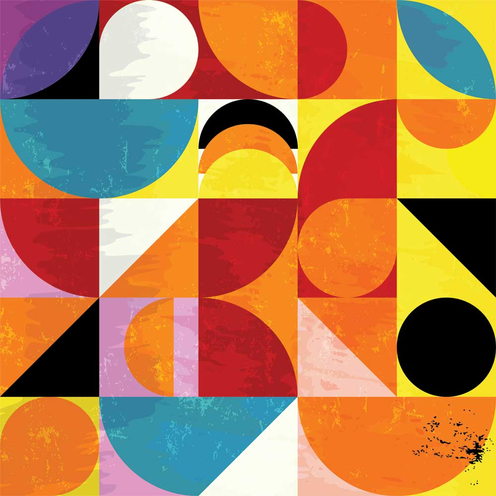
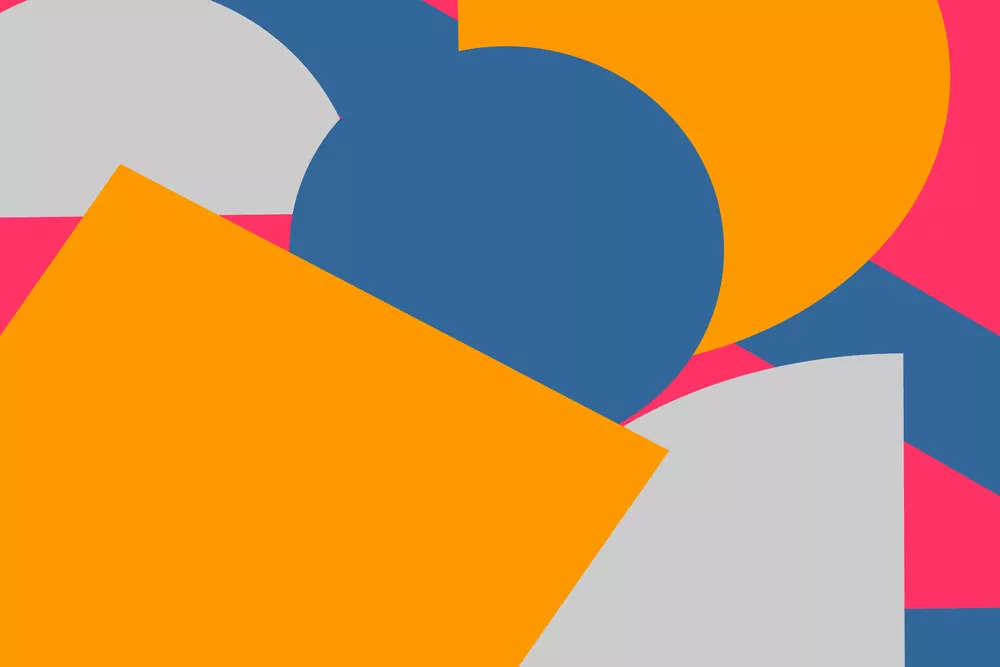
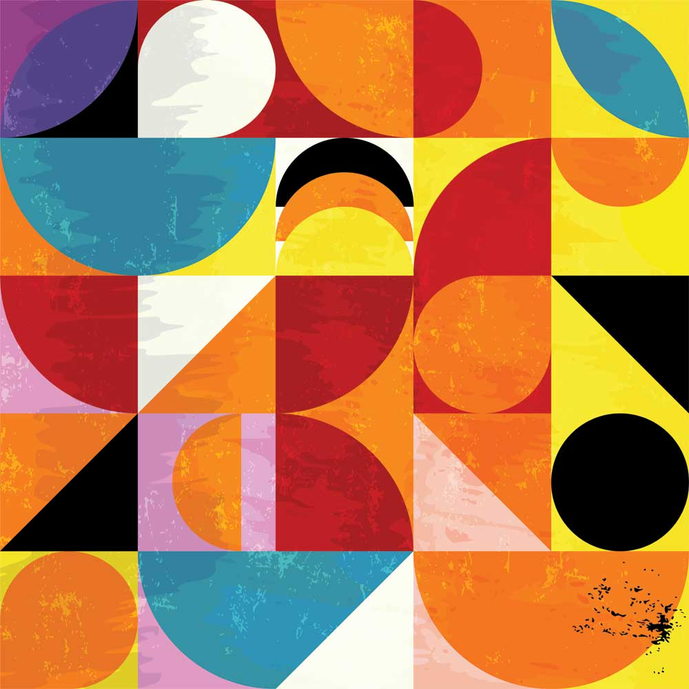
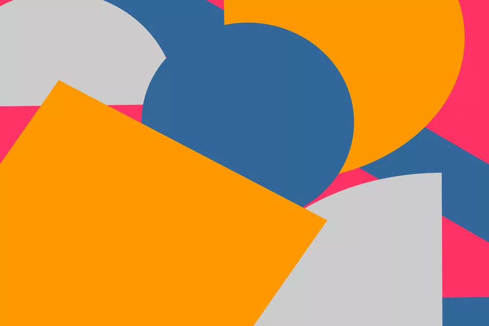

Project Concept
• Information Design
This project aims to combine visual and auditory experiences, without any text.
Users can generate random geometric shapes by clicking on the screen while uttering random syllables, and users can see the shapes on the screen combine into random abstract shapes.
Adding shapes of different colors and shapes (three simple shapes, circles, triangles, and squares), when these shapes collide, they instantly trigger different note and chord combinations (the user can drag and drop them to replenish the randomly generated combinations).
Concept sketches
• Style Ideas
Because I chose random numbers, I think it is very suitable for abstract graphics. Here are some references I found.

 



• sketches


• Simple Practice
I think it would be more flexible to not add a border.
I'll create the vector elements in Adobe Illustrator later.
Project Feedback
| Do you think it's interesting? | Should I add more draggable buttons? | Do you find the sound feedback intuitive? | What do you think needs improvement? |
|---|---|---|---|
| Hard to say without the sound | Yes I think so | Unfortunately the sound didn't work (maybe the http vs https issue) | Maybe some visual variation would be nice? |
| The clean UI and abstract design make this site super interesting to use, and super fun to just click around and see what happens | Only if they do something super useful | yeah, click thing make noise :D | Making where you click alter the noise made could be a next step, but maybe that'd be too lame |
| It is very abstract and minimal, but currently not producing any sound | yeah definitely, but preferably if it produces noises when you're dragging it, i think it would be neat and contrast compared to the static clicking | It is straightforward yes, but maybe some additional spice to it would be good: more ways to activate the sound, sound's pitch differs based on its location (or more range if random) and more | the sound feedback and maybe the canvas need some extra stuff in it, maybe different shapes or modifiers |
| yes i do | noh three is good i think | it takes few seconds | add memory function,it can let lines and dots connect to form a song |
| Yeah it's very interesting. Even though it took me a while to fully interact and experience with it but eventually it was cool | I don't think so, 3 of them looked great and did their job well. Because when they're dragged together, it created some mixed sounds so I think 3 is enough. | Yes I think so | It took me a while to know that I could click everywhere to create sound because of the note you made "click on visible items" and also it was interesting to click multiple times and it shows lots of colours - but the thing is, it took a while for me to get it |
| It not kind of interesting, rather feel very abstract. | I think you should add some other elements besides buttons, like a bar, dropping brick, something that make the interaction more varibles. | I think the sound feedback is quite straight forward, not to much constracts. | Maybe the draggable buttons could look more appealing? But you would have already fixed that with your idea for abstract shapes. |
| Yes, although I can tell you have yet to implement all the features you have in mind, I think the concept is really cool. Your plan to include abstract shapes is a great idea. | Perhaps, but would say maybe there needs to be more difference between the audio feedback from clicking on the blank space and dragging the buttons. | Yes! | I think it is a bit confused about the functions of the graggable buttons, which there are no direct feedback when draging the sounds, need to drag to the specific positions to trigger the effects, i think need to make the instruction or the interactions clearer. |
| I think it is, it has a strong interaction based on the mouse cursor movement. | Maybe not, it is great just like now that allow user to explore what the interaction are, such as let them explore dragging the ball to interact with the page. | Yes | From my perspective at the moment without knowing what happens behind the scene, I supposed at the moment the notes are randomised, or cycled. I think adding sections to the web page would definetly improve it makingit seem almost like each section of the webpage will play different notes or different set of notes almost like a piano the more you go on one side either it will be higher pitched or lower pitched. |
| yes, it is interesting that to interact with different ones of sounds while clicking. | yes, it may create more interactions. | It is intuitive and straight forward. | Might just be because its a prototype but I think if the sound continues when the draggable object were touching each other it could be interesting |
| I definitely think the concept of the page very interesting. | I think adding a hold and drag button would be a very interesting concept, and I would definitely want to see it. | Yes, the feedback of the sounds are intuitive. | You stated that you wanted to apply an abstract art style, so yeah, just go for that lol |
| I think it could be very interesting | Yes maybe a couple of more | I think adding the ever so slightly changin color on the background everytime you click was a good idea, as you can see where you have cliked or not. | I would suggest checking the performance across several devices to ensure that it works for everyone. |
| Yeah, I think it's a pretty unique take on a synthesizer page. | Definitely, I think it'd encourage more interactivity. | The sound feedback is very quick and responsive; it's intuitive. | Maybe make the background brighter to match a more vibrant aesthetic |
| I find the concept of dragging around circles as a novel form of input for musical sound is a really interesting and engaging interaction. | It would be interesting to have more buttons. Maybe more shapes would be cool! | I don't think the sound was working correctly when I used it sadly, I got sound for a second and it cut out. I'm not really sure how the sound was changing when I dragged it but the feedback seemed intuitive from what I gathered. | It's pretty cool already, but as the user I never really got to a point where I knew if I was using it the intended way or not. |
| I like how the circles leave their trace in the background and i think that's quite interesting- maybe leaving different colours could feel more interesting | If you've thought of more unique and interesting effects for them, then yes. Otherwise, it doesn't necessarily need more. | Yes | / |
| Yes it is really interesting ! | You could but I think this good ! | I think the rapid-fire sound when overlapping buttons was a little awkward. It might be good to experiment with triggering the note's attack just once when the buttons overlap, then release when they're separated. | Maybe larger circle or more shapes or option, The UI is good but kind of empty |
| Yes! I like the dragging part as it harmony | Yes please! | At first I didn't got it but it was really to understand and fun to play with. But I found that the website also made sound when we click at the background at the very end | I'm not sure I like the trace of the circle after the interaction happen, but it's just my personal opinion |
| Yes. | More buttons with engaging sounds. | Yes | I think the base volume is kind of high though. |
◆ Summary
Thanks for testing my prototype:D
Here are some points that can be improved:
• Add clickthrough guidance (something that was in the concept but forgotten in the prototype)
• Continue to add a few draggable buttons
• A richer sensory experience is needed (such as the sound of dragging graphics, and the background changes on the screen when clicking)
• Perhaps the sound production could be made more regular, like a piano, where the further go to one side, the higher or lower the pitch
• Maybe make the sound when the shapes touch longer (echo?)
◆ Known bugs
• No prompt box pops up when entering the web page
(If it still can't be repaired, perhaps keeping the side border is a good option)
References
- Kandinsky.W. 1923 Composition 8 [oil on canvas], 140 × 201 cm, New York: Solomon R. Guggenheim Museum.
- Mullaney.S. n.d.Sue Mullaney – Artist Profile. Open Studio Hartford. Available at: https://openstudiohartford.com/artists?artistID=2302
- GingerWhite 2021Geometric Abstraction - Untitled (#AA_GABST_20). Available at: https://www.gingerwhite.co.uk/products/geometric-abstraction-untitled-aa_gabst_20
- Timarevska.A 20237 Types of Abstract Art for Inspiring Designs. Depositphotos Blog. Available at: https://blog.depositphotos.com/7-types-of-abstract-art-for-inspiring-designs.html
- Production Type, 2021, Newsreader, variable font. Available at: https://fonts.google.com/specimen/Newsreader